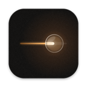

S9 Brightness
The real backlight of your Samsung monitor, from the Mac menu bar.
Try the slider in the top right.
A small macOS menu bar app that sets the hardware brightness of Samsung smart monitors, such as the ViewFinity S9, over your local network. One slider, four presets, nothing else.
Setup
Turn on IP Remote on the monitor.Settings › Connection › Network › Expert Settings › IP Remote
Open S9 Brightness and click Connect, then select Allow on the monitor.
Adjust brightness from the sun in the menu bar. Right-click a preset to save the current brightness.
macOS 14 or later. The monitor on the same network as your Mac.
Signed and notarized. Free and open source under the MIT License.